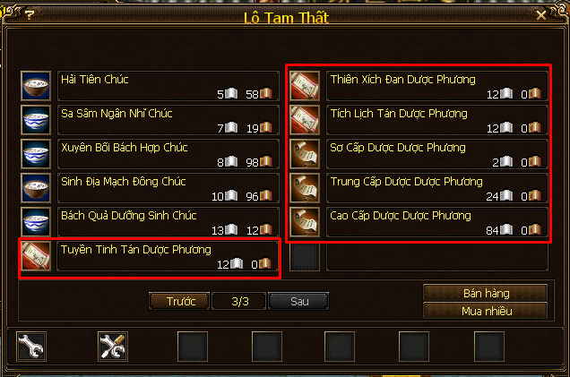
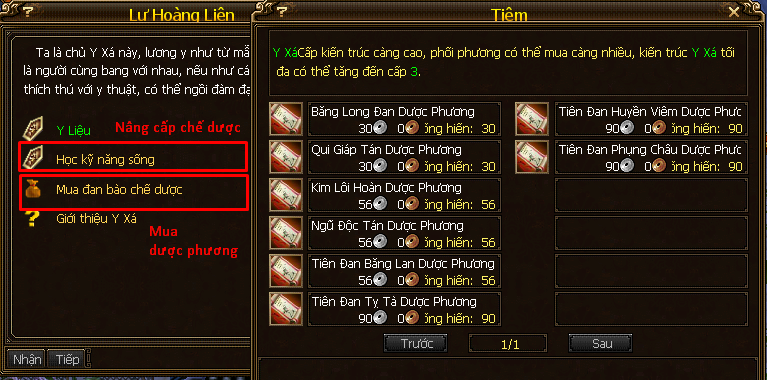
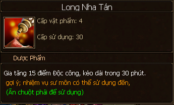
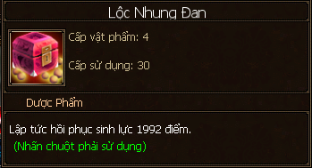
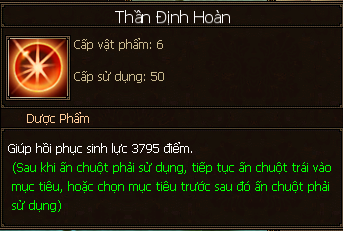
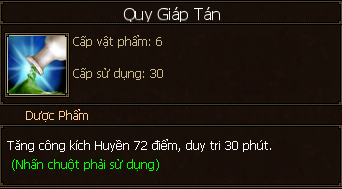

Chế Dược¶
Nghề chế dược kết hợp với chế dược của môn phái làm ra những dược phẩm giúp tăng thuộc tính tấn công, có thể sử dụng chung 2 loại giúp tăng một lượng điểm thuộc tính bằng một viên thuần tịnh tinh thạch cấp 6 đó!
Học Nghề¶
Học nghề tại khu dược phố (chữ Dược trên bản đồ) ở các thành thị chính:
Đại Lý: NPC Phó Đương Quy (97, 122).
Dùng nguyên liệu từ nghề Hái dược và đứng gần lò luyện đan ở gần các NPC dạy nghề để tiến hành chế dược.

Đứng gần lò luyện đan nằm ở các khu dược phố của các thành thị thì mới có thể chế dược!¶

Thông tin về nguyên liệu chế dược có thể đọc ngay tại công thức¶
Thăng Cấp¶
Chế dược cho đủ điểm thành thạo của cấp hiện tại và tiếp tục tăng cấp mới tại các NPC sau:
Từ 1 - 5: tại các NPC dạy nghề chế dược ở thành thị.
Từ 5 - 10: tại NPC Lư Hoàng Liên (50, 95; chữ Y trong thành thị bang hội).
Dược Phương¶
Một số dược phương nhập môn mua tại Dược Điếm ở các thành thị:
Đại Lý: NPC Lô Tam Thất (105, 123).
Một số phương thức chế dược cơ bản có thể mua tại dược điếm (tiệm thuốc) ở các thành thị chính.¶
Các dược phương cao cấp hơn mua tại NPC trong thành thị bang hội:
Các dược phương chế ra các loại dược phẩm giúp tăng thuộc tính tấn công có thể mua tại NPC chữ Y - Lư Hoàng Liên trong thành thị bang hội.¶
Cấp |
Tên và công dụng |
Cách thức |
|---|---|---|
1 |
Thiên Nhãn Đan (+ Huyền công) Băng Linh Tán (+ Độc công) Âm Nguyệt Tán (+ Băng công) Bá Vương Hoàn (+ Hỏa công) Bách Mạch Tán (hồi máu) Hành Huyết Tán (hồi máu nhanh) Bách Hoa Hoàn (hồi máu) Hoạt Huyết Toán (hồi máu nhanh) Thanh Tâm Tán (hồi máu) Kim Sang Dược (hồi máu nhanh) |
Công thức chế dược sơ cấp: dược liệu cấp 1 - 3 |
4 |
Khinh Thân Tán (+ Huyền công) 
Long Nha Tán (+ Độc công) Thiên Hương Cao (+ Băng công) 
Hạc Vũ Đan (+ Hỏa công) 
Lưu Vân Cao (hồi máu) 
Lộc Nhung Đan (hồi máu nhanh) Hồi Tâm Đan (hồi máu) 
Sâm Tâm Đan (hồi máu nhanh) Thần Định Hoàn (hồi máu)  |
Công thức chế dược trung cấp: dược liệu cấp 4 - 6 |
7 |
Tiên Đan Vô Danh (+ Huyền công) 
Tiên Đan Thái Khê (+ Độc công) 
Tiên Đan Thúy Lưu (+ Băng công) 
Tiên Đan Thanh Lân (+ Hỏa công) 
Tiên Đan Huy Nguyệt (hồi máu) Tiên Đan Âm Dương (hồi máu) 
Tiên Đang Hàn Yên (hồi máu) 
|
Công thức chế dược cao cấp: dược liệu cấp 7 - 9 |
3 |
Tuyền Tinh Tán (+ 20 Băng công trong 30 phút) Thiên Xích Đan (+ 20 Huyền công trong 30 phút) Tích Lịch Tán (+ 20 Hỏa công trong 30 phút) Qui Tâm Hoàn (+ 20 Độc công trong 30 phút) |
2 Tỳ Bà 2 Kim Ngân Hoa 4 Tri Thù |
6 |
Băng Long Đan (+ 72 Băng công trong 30 phút) Quy Giáp tán (+ 72 Huyền công trong 30 phút) Kim Lôi Hoàn (+ 72 Hỏa công trong 30 phút) Ngũ Độc Tán (+ 72 Độc công trong 30 phút) |
3 Hương Nhu 3 Hoàng Liên 6 Thiềm Thử |
9 |
Tiên Đan Băng Lan (+ 120 Băng công trong 30 phút) Tiên Đan Tị Tà (+ 120 Huyền công trong 30 phút) 
Tiên Đan Huyền Viêm (+ 120 Hỏa công trong 30 phút) Tiên Đan Phụng Châu (+ 120 Độc công trong 30 phút) |
5 Đông Trùng Hạ Thảo 7 Long Quì Tử 12 Trúc Diệp Thanh |
Kinh Nghiệm¶
Các loại dược phẩm hiếm cần tiêu tốn các loại dược phụ có thể nhặt được lúc hái dược, vì vậy đừng vội vứt các loại dược phụ (bạn sinh) này nhé!
Học và tăng cấp kỹ năng dược lý càng cao để giảm tiêu hao hoạt lực khi chế dược và tăng tỉ lệ ra các dược phẩm hiếm, dược phẩm ngẫu nhiên khi chế theo 3 công thức: sơ cấp, trung cấp, cao cấp.
Hình ảnh các loại dược liệu cấn để chế dược các bạn có thể xem trang nghề Hái dược, mình đã kèm theo hình ảnh hầu hết các loại dược phẩm và vị trí hái của chúng.
LingYun ghi chép lúc 21:33 30/7/2018